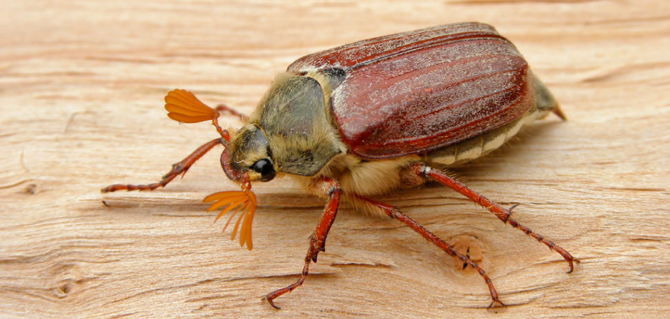

Наибольшее распространение получили следующие виды аэродинамической компенсации:
- - роговая — на конце руля часть его площади в виде «рога» располагается спереди от оси шарниров, что обеспечивает создание момента обратного знака по отношению к основному шарнирному;
- - осевая — часть площади руля по всему размаху располагается спереди от оси шарниров (ось шарниров смещается назад), что уменьшает шарнирный момент;
- - внутренняя — обычно используется на элеронах и представляет собой пластины, прикреплённые к носку элерона спереди, которые связаны гибкой перегородкой со стенками камеры внутри крыла. При отклонении элерона в камере создаётся разница давлений над и под пластинами, которая уменьшает шарнирный момент.
- - сервокомпенсация — в хвостовой части руля шарнирно подвешивается небольшая поверхность, которая тягой связывается с неподвижной точкой на крыле или оперении. Эта тяга обеспечивает автоматическое отклонение сервокомпенсатора в сторону, противоположную отклонению руля. Аэродинамические силы на сервокомпенсаторе
Четырехдвигательный турбовентиляторный низкоплан со стреловидным крылом и однокилевым оперением и расположением двигателей под крылом.
Основные требования к оперению:
- - обеспечение высокой эффективности при минимальном лобовом сопротивлении и наименьшей массе конструкции;
- - возможно меньшее затенение оперения другими частями самолёта — крылом, фюзеляжем, гондолами двигателей, а также одной части оперения другой;
- - отсутствие вибраций и колебаний типа флаттера и бафтинга;
- - более позднее, чем на крыле, развитие волнового кризиса.
Для стабилизаторов вполне успешно используются лонжеронная, кессонная и моноблочная схемы, а для килей последняя схема применяется реже, из-за определенных конструктивных трудностей при передаче изгибающего момента с киля на фюзеляж. Контурный стык силовых панелей киля с фюзеляжем в этом случае требует установки большого числа силовых шпангоутов или установки на фюзеляже в плоскости силовых панелей киля мощных вертикальных балок, опирающихся на меньшее число силовых шпангоутов фюзеляжа.
У стабилизаторов можно избежать передачи изгибающих моментов на фюзеляж, если лонжероны или силовые панели левой и правой его поверхностей связать между собой по кратчайшему пути в центральной его части. Для стреловидного стабилизатора это требует перелома оси продольных элементов по борту фюзеляжа и установки двух усиленных бортовых нервюр.

Ввиду полной идентичности конструкции и силовой работы рулей и элеронов в дальнейшем для краткости речь будет идти только о рулях, хотя все сказанное будет полностью применимо и к элеронам. Основным силовым элементом руля (и элерона, естественно), работающим на изгиб и воспринимающим практически всю перерезывающую силу, является лонжерон, который опирается на шарнирные опоры узлов подвески.